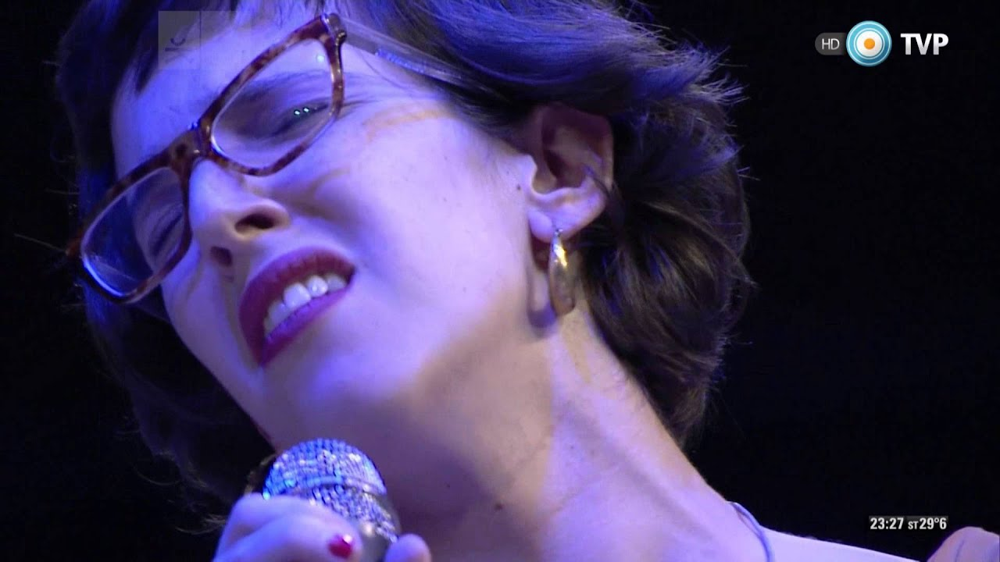

Homenaje a Spinetta en el CC Kirchner
Como muy pocas veces, las siete letras de la palabra "emoción" resultaron insuficientes para describir los vaivenes del corazón. "Tu vuelo al fin", el homenaje a Luis Alberto Spinetta realizado el 24 de septuembre del 2015 en la Ballena Azul del Centro Cultural Kirchner, fue demasiado y, a la vez, apenas rozó la superficie de una obra inmensa, única, imposible de abarcar en una noche. Si no pudo lograrlo el propio Flaco en las inolvidables cinco horas de Las Bandas Eternas en Vélez, no había chance de que sucediera ahora que él ya no está. Pero, pese a eso, las lágrimas, la sensación de sobrecogimiento, el disfrute íntimo, el volver a maravillarse ante la perfecta conjunción entre un acorde marciano y una metáfora que abre las puertas de universos...